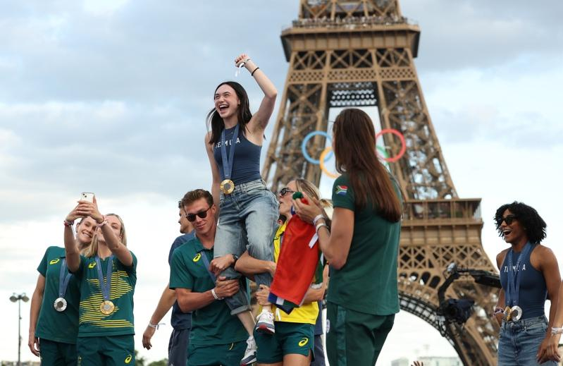

国际奥林匹克委员会（IOC）虽然不会向2024巴黎奥运的获胜者颁发奖金，但有许多国家和地区都会向运动员提供丰厚奖励，以期他们能够在国际舞台为国争光。
除了财务方面的奖赏，还有许多不同于现金的各类奖励，包括免除义务兵役、赠送汽车、乳牛、公寓，甚至还有免费食物配送。一枚奥运奖牌，究竟能为其他国家地区的运动员带来哪些奖励，以下是法新社汇整的数据。
新加坡 百万飞行里程
新加坡泳将斯库林（Joseph Schooling）在2016里约奥运勇夺金牌，叫车服务Grab为他和他的家人提供为期一年的免费交通服务。此外，新加坡航空公司（Singapore Airlines）向他提供百万飞行里程，而政府则为每位金牌得主提供100万新币（约1847美元）奖金。
南韩 免除18个月义务兵役
任何等级的奥运奖牌，都可以让南韩运动员免除18个月的义务兵役。在南韩，所有身体健全的男性必须在28岁前服兵役。而在2021年东京奥运，南韩6名射箭运动员包揽了5枚金牌中的4枚，在背后资助南韩射箭队的现代汽车公司（Hyundai）赠送汽车给这些运动员作为奖励。
波兰 钻石、公寓奖励
在个人项目获得金牌的运动员将获得25万兹罗提（约6.3万美元）的现金奖励、一套两房公寓、一颗钻石、一幅画作和一张度假券。银牌和铜牌得主也能获得丰厚现金和其他奖励。
印尼 获赠黄金和店面
3年前在东京奥运赢得金牌的印尼羽球女双波利（Greysia Polii）与拉哈育（Apriyani Rahayu）据报获得房地产开发商赠与的新房子，而一家连锁肉丸餐厅的老板也给予两人各一家分店。
印尼安塔拉通信社（Antara）报导，拉哈育家乡东南苏拉威西省（Southeast Sulawesi）的政府还给了她5头牛、一块土地和一栋房子。国营企业PT Pegadaian承诺赠送两人3公斤黄金。
约旦 授予最高平民荣誉
约旦运动员高希（Ahmad Abu Ghaush）在里约奥运跆拳道男子68公斤级决赛中，为约旦摘下史上第一枚奥运金牌后，约旦奥委会给了他10万第纳尔（约14万美元）奖金。约旦国王阿布杜拉二世（King Abdullah Ⅱ）则授予他最高平民荣誉。
菲律宾 晋升部队上士
菲律宾举重选手狄亚士（Hidilyn Diaz）在东京奥运赢得了菲国史上第一枚金牌后，收到了房地产等丰厚好礼，还被晋升为菲律宾武装部队上士。菲律宾奥委会主席杜连迪诺表示，他曾自掏腰包，向奖牌得主赠送房屋和土地。
马来西亚 1年免费外卖
在巴黎奥运夺得首枚金牌的运动员，获物输公司Grab承诺提供一年的免费外卖订单。政府表示，他们还将获得一辆奇瑞（Chery）休旅车以及房地产开发商Top Residency提供的一套豪华公寓。
印度 七人座休旅车
印度选手邱普拉（Neeraj Chopra）在东京奥运标枪项目摘金后，除了可在一年内无限次免费搭乘靛蓝航空（IndiGo）旅行，还能得到一辆全新七人座休旅车。
巴黎奥运热话题
- 刘易士都无言 美国队没人晋级跳远决赛
- 球拍被记者踩断 王楚钦：我是受害者、不想再讨论
- 穿太辣制造不恰当气氛 巴拉圭泳手被逐出选手村
- 陈梦对孙颖莎引发球迷大战 北京要整治体育界饭圈文化
- 美运动员「紫脸」是屏幕偏色？ 中体育官员「恨国言论」被查